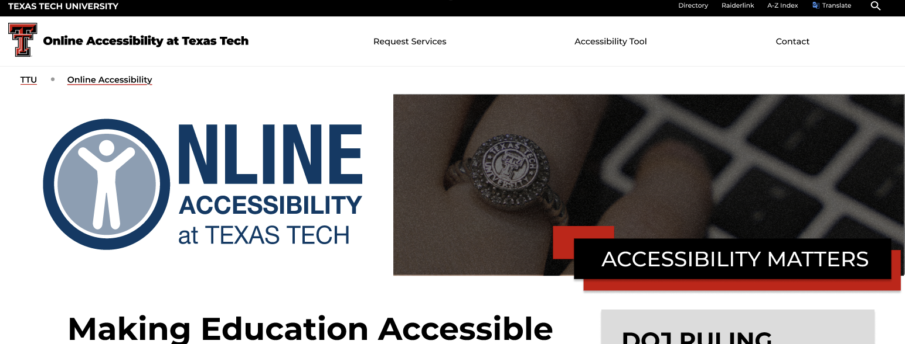

Recent Projects
Take a look at some of my recent work.

UX Design: Redesigning the Accessibility Website
This project involved redesigning the university's faculty resources website for accessibility to improve user experience and ensure compliance with new accessibility standards for public institutions.